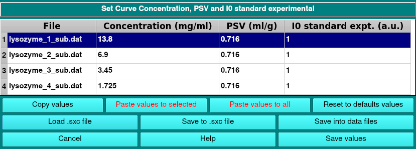

SOMO SAXS Concentration, PSV and I(0) std. expt. Set/Modify Module:
Last updated: November 2026

In this module the files names of the SAXS data currently uploaded in the SAS module will be listed in separate lines. In the three successive columns the concentration (mg/ml), partial specific volume (PSV, ml/g), and the standard experimental I(0) (I0 standard expt., a.u.) are reported or can be entered if absent. Values found in the first line of a data file when it was loaded (see Save into data files below) are reported. A number of utilities is present for copying selected values (Copy values), pasting to either selected (Paste values to selected) or to all (Paste values to all), or to Reset to default values.
The current values can be saved in two ways:
- Save into data files writes the values of each curve into the first line of the data file (.dat, .txt or .sprr) the curve was loaded from, as Conc:, PSV: and I0se: entries. These are read back when the file is loaded again in the SAS module; the HPLC/KIN module and the SAS Data Utility read the same entries. Entries already present are given the new values, missing ones are added at the end of the line, and if the file starts directly with data, a header line is added in front of it; no other line of the file is changed. The list of the files to be written is shown first, and nothing is written unless it is confirmed; a summary of what was written follows. The values are also accepted, as with Save values, but the module stays open.
Moving the mouse over a file name shows the data file the curve was loaded from. Curves without one are not written: curves computed in SOMO, curves transferred from the HPLC/KIN module or the SAS Data Utility (save them from that module instead), curves loaded from other formats, and the model curve of a file holding both experimental and model data. I*(q) curves are not written either (see the note below), nor is a file loaded more than once with different values entered for its curves.
- Save to .sxc file saves the whole table as a single .sxc file, which Load .sxc file reads back, setting the values of the curves listed with the same names.
Cancel will interrupt the current operation and close the module, while Save values will accept the changes and close the module.
Note: when I*(q) files are either directly loaded in the SAS module or transferred from the HPLC/KIN module ("to SOMO/SAS" button), the c, PSV and I(0) values previously used to convert I(q) to I*(q) are reported but not used or editable. The same holds for I#(q) data, but since they were not normalized by the concentration, proper c values can be entered here. As the I*(q) values record that conversion, Save into data files never writes into I*(q) files; I#(q) files are written.
www contact: Emre Brookes
This document is part of the UltraScan Software Documentation
distribution.
Copyright © notice.
The latest version of this document can always be found at:
http://somo.aucsolutions.com
Last modified on November 12, 2026.